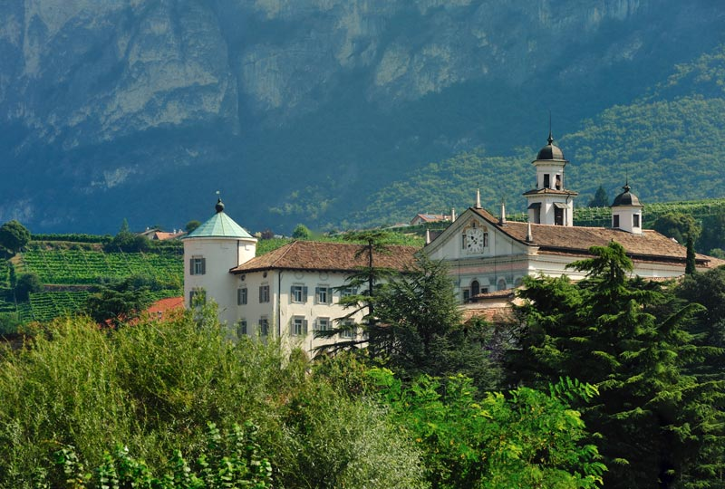
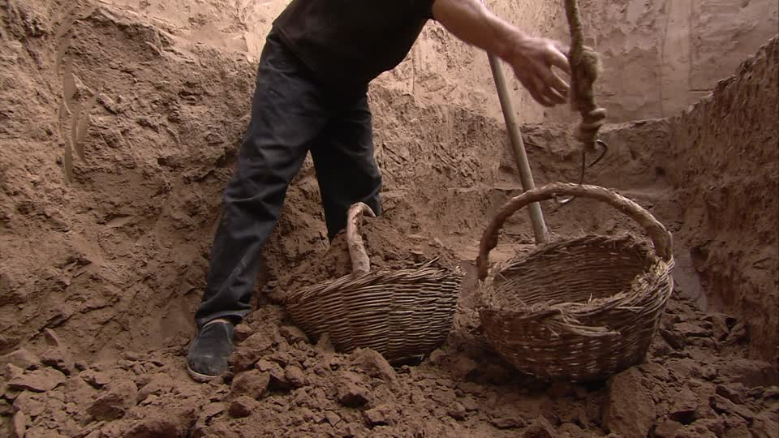

Trajectoire(s)
L'itinéraire d'un géographe gâté
Par Etienne Delay @ElCep
Tout commence ici ?
Licence
Une fois passées les errances!
- De la médecine à la bio (2003-2006)
- Médecine (PCEM1)
- DEUG de Biologie (L1, L2)
- BTS GPN (en apprentissage 2006-2008)
- ENS des Ecouges
Pastoralisme et Montagne
On en retiendra
- Un approche systémique
- L'importance de l'espace
- L'Homme est exclus du système!
C'est aussi le premier contact avec le Sénégal
L3 IUP "Valorisation du patrimoine rural"
Biodiversité cultivée → Centre d'Ampélographie Alpine.
- Besoin de comprendre l'espace (SIG)
- Besoin d'organisation d'une base de données
Viticulture me voilà !
Master

Académique
- M1 et M2 Développement des territoires ruraux
- DEUST gestionnaire d'intranet et base de données
- Montage, suivie et animation de projet
- Autonomie avec les outils numériques
Des stages
- CERVIM : Centre d'Etude et de Recherche pour la VIticulture de Montagne (IT)
- Fondazion E. MACH (IT)
On en retiendra

- D'un point de vue thématique
- La viticulture de montagne en europe = 7% de la viticulture
- La contrainte orographique influence les pratiques sociales
- D'un point de vue technique
- Logiciel libre (SIG)
- Langages (R, SQL, etc.)
- La formalisation informatique aide à penser le territoire
Doctorat
Laboratoire GEOLAB, Univ. Limoges sous la direction de E. Rouvellac, N. Becu, P. Allée
Je propose un sujet
“Evolutions et prospectives paysagères des territoires viticoles de fortes pentes”
C'est là que tout se joue ! Je ne connaissais rien au SMA ou à la modélisation d'accompagnement.
Je suis dans un laboratoire et une université dont ce n'est pas la spécialité. Et pourtant : "C'est un sujet pour les SMA !" (P. Allée, 2011)
Les problématiques
Explorer les interactions société ⇔ environnement pour proposer une lecture et une compréhension renouvelées du fonctionnement de la viticulture de pente

Les terrains d'études : localisation

Les terrains d'études : description
Banyuls-sur-Mer

La val di Cembra
Un cadre théorique pourla modélisationet la simulation
« dépasser l'unicité des lieux et des phénomènes observés »
( Pumain, 2003, p.27)
Définition et limites conceptuelles
Première publication de l'ontologie du terroir : Delay (2013)
Une démarche post-normale ?
« when uncertainties are either of the epistemological or ethical kind, or when decision stakes reflect conflicting purposes among stakeholders »
Funtowic et Ravertz 1993 (p. 750)
Pour faire face à l’inconnu ou à la complexité, les sciences post-normales l'intègrent et la délimitent en utilisant une communauté de pairs.
 Séminaire LACCAVE (Banyuls 2013)
Séminaire LACCAVE (Banyuls 2013)
De l'empirisme dans la modélisation 1/2
Les SMA ouvrent la voie pour les SHS aux construits formels
« formal models are essential to science, not because they are more "true" than other kinds of model, but that they facilitate a collective and progressive development of knowledge between researchers »
Edmonds (2015, §1.2)
De l'empirisme dans la modélisation 2/2

Tubaro, P. et A. Casilli (2010).
Situer les modèles et leurs objectifs

d'après la grille de lecture proposée par Banos et Sanders (2013)
Une construction itérative et partagée
| Modèles | Echelles | Acteurs |
|---|---|---|
| Dion Still Alive & VIcTOr | Petite échelle | Chercheurs ou institutions nationales |
| LAME & CiVIsMe | Meso-échelle | Institutions régionales/nationales |
| acidityGIS & CeLL | Grande échelle | Acteurs locaux |
Ces modèles nous permettent d'obtenir des résultats à différentes échelles et pour différents usages
Prospective et simulations co-construites 1/2

D'après Sebillotte et Sebillotte (2002), la prospective par co-construction (Delay, 2017)
Prospective et simulations co-construites 2/2
|
Le bonus n°1 : Quels modèles pour qui ?
Le bonus n°2 : ❤ Analyse de sensibilité
|
Tout ça ne s'est pas fait tout seul
- MISS-ABMs 2012
- MAPS 2012,2013, 2014, 2015
- SeminR MHN
Et il ne faut pas s'arrèter là
«Bon Etienne, va falloir élargir tes thématiques !»
Arnaud Banos (10 juin 2015)
Postdoctorat n°1 : EAU
Chaire d'excellence : "Capital environnemental et gestion durable des cours d'eau" avec James Linton
Barrage, pratiques agricoles et lien social

On en retiendra
- Une fascination pour l'eau (liens soc. et conflits)
- Découverte de la géographie radicale
- La réorientation de ma recherche : l'entraide/coopération
- La coopération était centrale en thèse, mais ...
Y-a-t'il des conditions favorables à la coopération ?
- Rapprocher d'un point de vue ontologique coopération et compétition (écologie)
- Identifier les conditions d'accès à la ressource qui favorisent la coopération et l'entraide
Et je ne vous parle pas de LittoSim

Le modèle littoSim sur github
Je ne vous parle pas non plus de nep-tunes
Le jeu Nep-Tune sur github
Postdoctorat n°2 : Sahel
UMi CNRS ESS (Dakar) et OHMi Tessékéré avec J.-L. Peiry et D. Goffner pour l'ANR futur Sahel

Observatoire Hommes-Milieux et GMV
- Co-construire un SGBD-SIG
- pour les chercheurs
- pour les acteurs locaux
- Explorer le lien entre les Hommes et les arbres
Le terrain qui questionne !
- Où est passée la coopération dans le Ferlo ?
- Comment se passe la gestion des ressources naturelles?
TerritOry - Resources Societal Organization (TORSO)
Largement inspiré de MacDonald (2016, 2017). Les structures des groupes humains évoluent selon leur degré d'autonomie vis-à-vis du groupe.
- Open-Aggregate : la coopération est volontaire entraîne une équivalence entre les sujets.
- Social forms : les sujets ne sont pas autonomes, la coopération est forcée et les sujets ne sont pas équivalents dans la coopération.
Où nous mène TORSO ?
Work in progress...(Delay et Maraud, 2017). A Tester sur d'autres territoires et de manière participative.
Pour essayer de conclure
Qu'est-ce que je fais ici ?
Ma vision de travail
Qui suis-je?
géographie + modélisation d'accompagnement ⇔ ❤
D'un point de vue méthodologique
Les choix génèrent des chemins conduisant au même pattern
- Cormas/Pharo
- OpenMole
- ComMod avec OpenMole
D'un point de vue thématique
- Les conditions d'émergence de la coopération
- Émergence et auto-organisation sociales (émancipation)
«Social sicences are, in fact, the "hard" science»
Herbert Simon (économiste)
«With great power comes great responsibility»
Benjamin "Ben" Parker (1962)